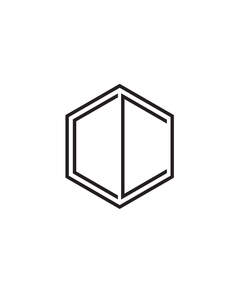

Trade Mark Journal No.2025/028 11 July 2025
UK00004227503 1 July 2025 (9,16,20,35,41,42)

- Class 9
- Downloadable e-books; Downloadable videocasts; Downloadable podcasts; Downloadable video files; Downloadable electronic brochures; Downloadable videos; Downloadable publications; Downloadable applications; Electronic publications, downloadable; Publications (Electronic -), downloadable; Downloadable electronic publications; Electronic publications (downloadable); Downloadable digital assets; Digital books downloadable from the Internet; Downloadable educational course materials; Downloadable educational media; Downloadable virtual clothing; Downloadable virtual footwear.
- Class 16
- Printed books; Printed booklets; Printed pamphlets; Printed publications; Publications (Printed -); Books; Jackets of paper for books; Manuscript books; Printed calendars; Coloring books; Covers for books; Colouring books; Blank journal books; Picture books; Drawing books; Covering materials for books; Printed certificates; Non-fiction books; Printed lessons; Sketch books; Reference books; Printed educational materials; Hand books; Diaries [printed matter]; Series of non-fiction books; Art prints; Art pictures; Fine art prints; Paintings; Watercolor paintings; Decoration and art materials and media; Printed visuals; Drawings; Photo prints; 3D wall art made of card; Canvas prints.
- Class 20
- Furniture; Furniture and furnishings; Upholstered furniture; Dressers [furniture]; Cushions [furniture]; Wooden furniture; Furniture cabinets; Cabinets [furniture]; Patio furniture; Washstands [furniture]; Pouffes [furniture]; Kitchen furniture; Cupboards being furniture; Bedroom furniture; Outdoor furniture; Nursery furniture; Drawers for furniture; Benches [furniture]; Household furniture; Bathroom furniture; Garden furniture; Lawn furniture; Desks [furniture]; Furniture shelves; Shelves [furniture]; Panelling for furniture; Furniture for kitchens; Kitchen dressers [furniture]; Wooden shelving [furniture]; Leather furniture; Slatted furniture; Stationery cabinets [furniture]; Tables [furniture]; Seating furniture; Indoor furniture; Furniture for bathrooms.
- Class 35
- Business consultancy; Business consultancy to firms; Business management and consultancy; Business management consultancy; Business consultancy services; Consultancy (Professional business -); Professional business consultancy; Business consultancy (Professional -); Business consulting; Professional business consultancy services; Business consultancy and advisory services; Business advisory and consultancy services; Mail order retail services for clothing accessories.
- Class 41
- Education and training; Education, teaching and training; Education and training services; Education and training consultancy; Training and education services; Vocational education and training services; Provision of training and education; Provision of education and training; Training; Education; Training or education services in the field of life coaching; Training courses; Training services; Coaching [training]; Training consultancy; Life coaching (training); Courses (Training -) relating to management; Business training; Personal development training; Teaching of interior design.
- Class 42
- Design of furniture; Furniture design; Designing of furniture; Design of clothing accessories; Design of fashion accessories; Design of clothing, footwear and headgear; Interior design; Design of interior decoration; Design of interior decor; Decor (Design of interior -); Interior decor design; Interior decorating design; Architectural design for interior decoration; Interior and exterior design services; Commercial interior design; Shop interior design; Interior design services; Design of interior decor for shops; Design of building interiors; Design services for the interior of buildings; Interior design services for boutiques; Design of furnishings; Design services relating to interior decoration; Space planning [design] of interiors; Interior design services for shops; Interior decorating; Design of building exteriors; Design services for building interiors; Styling [industrial design]; Interior decoration consultation; Consultancy relating to selection of furnishing fabrics [interior design]; Design services relating to interior decorating for homes; Design services relating to interior decorating for offices; Consultancy relating to selection of curtaining [interior design]; Design of artwork; Landscape lighting design; Kitchen design; Furnishing design services for the interiors of buildings; Design of kitchens; Interior design services for the retail industry; Consultancy services relating to interior design; Fashion design; Visual design; Design of carpets; Professional consultancy relating to the design of interior accommodation; Design of bathrooms; Consultation services relating to interior design; Design of curtains; Design of layouts for office furniture; Jewelry design; Design of clothing; Interior design services incorporating the principles of feng shui; Design of jewellery; Design services relating to shop interiors; Product design; Office layout design services; Design of sculptures; Design consultancy; Office furniture design; Design services for furniture; Design of blinds; Furnishing design services; Shop design; Information services relating to the combination of colours, paints and furnishings for interior design; Commercial art design; Design of layouts for offices; Technical design; Art work design; Planning and design of kitchens; Planning [design] of kitchens; Pattern design; Design services for art-work.
Carole Crowe